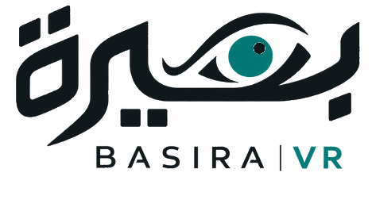

| رقم الوثيقة | BASIRA-UT-PRO-001 |
| الإصدار | 1.0 |
| تاريخ الإصدار | 13 نوفمبر 2026 |
| الحالة | مسودة للمراجعة |
| التصنيف | داخلي — فريق المشروع MED-VF7H45 |
| المتطلب المرتبط | U1 في خطة التحقق والمصادقة (docs/VERIFICATION_AND_VALIDATION.md) |
| الدور | الاسم | التوقيع | التاريخ |
|---|---|---|---|
| الإعداد | محمد حسين | ||
| المراجعة السريرية | أسماء السباعي | ||
| مراجعة التحليل | منى بايزيد | ||
| الاعتماد | أسماء السباعي، قائدة المشروع |
| الإصدار | التاريخ | وصف التغيير | المُعدّ |
|---|---|---|---|
| 1.0 | 2026-11-13 | الإصدار الأول | محمد حسين |
| 1 | الغرض | 8 | إجراء الجلسة |
| 2 | النطاق | 9 | المقاييس ومعايير القبول |
| 3 | المراجع | 10 | معالجة البيانات والتحليل |
| 4 | التعاريف | 11 | السجلات |
| 5 | المسؤوليات | أ | نموذج الملاحظة UT-F01 |
| 6 | المشاركون والاعتبارات الأخلاقية | ب | استبيان SUS UT-F02 |
| 7 | المعدات والتجهيز | ج | سجل المشكلات UT-F03 |
يحدد هذا البروتوكول طريقة تقييم قابلية استخدام تطبيق الأخصائي في نظام بصيرة مع أخصائيي البصريات، ويجيب عن ثلاثة أسئلة:
تُستعمل النتائج لتحسين التطبيق، ثم يُعاد الاختبار للتأكد من أن التحسين نجح.
يشمل: تطبيق الأخصائي في وضع المحاكاة، بالإصدار المحفوظ في المستودع (dist/BASIRA_app.html)، مع مريض افتراضي داخل البرنامج.
لا يشمل: فحص أي شخص، أو استعمال الجهاز الفعلي، أو جمع بيانات صحية. ولا يقيس هذا الاختبار دقة الجهاز البصري، فذلك يخضع لإجراءات المعايرة والتحقق (docs/CALIBRATION.md).
| 1 | ISO 9241-11:2018، بيئة التفاعل بين الإنسان والنظام — الجزء 11: قابلية الاستخدام، التعاريف والمفاهيم. |
| 2 | Brooke J. SUS: a "quick and dirty" usability scale. In: Usability Evaluation in Industry. Taylor & Francis; 1996. |
| 3 | Nielsen J, Landauer TK. A mathematical model of the finding of usability problems. Proc. INTERCHI '93; 1993. |
| 4 | Sauro J. A Practical Guide to the System Usability Scale. Measuring Usability LLC; 2011. |
| 5 | وثائق المشروع: خطة التحقق والمصادقة، وسجل التحسينات (docs/ITERATIONS.md). |
| المصطلح | التعريف |
|---|---|
| المشارك | أخصائي البصريات الذي يؤدي المهام، ويُرمز له P1…P5. |
| المراقب | عضو الفريق الذي يدير الجلسة ويسجّل الملاحظات ولا يساعد إلا وفق البند 8.4. |
| CONFIRMED | حالة الجهاز بعد أن تؤكّد الحسّاسات الإعداد. لا تُحفظ نتيجة قبلها. |
| وصفة البعيد | القيمة المؤكَّدة بعد تصحيح بُعد لوحة القراءة، كما يعرضها التطبيق. |
| أقصى موجب | أكثر قيمة موجبة للكروي تعطي أفضل حدّة إبصار، وهي نقطة النهاية المعتمدة. |
| SUS | مقياس قابلية الاستخدام، من عشرة بنود، ونتيجته من 0 إلى 100 (المرجع 2). |
| شدّة المشكلة | 0 = ليست مشكلة · 1 = شكلية · 2 = بسيطة · 3 = كبيرة · 4 = تمنع إكمال المهمة. |
| الدور | الشخص | المسؤولية |
|---|---|---|
| قائدة الاختبار | أسماء السباعي | دعوة المشاركين، وإدارة الجلسات، والحكم السريري على نجاح المهام. |
| المراقب | عضو من الفريق | التوقيت وتعبئة النموذج UT-F01. |
| محللة البيانات | منى بايزيد | إدخال البيانات وتحليلها وإعداد التقرير. |
| مسؤول البرمجيات | محمد حسين | تجهيز الإصدار المختبَر، وتنفيذ التحسينات، وتحديث سجل التحسينات. |
مدة الجلسة نحو 20 دقيقة، بالترتيب: الافتتاح (دقيقتان)، ثم المهام (12 دقيقة)، ثم الاستبيان والأسئلة (6 دقائق).
«شكرًا لوقتك. نختبر التطبيق ولا نختبرك. هذا نموذج رقمي لجهاز فحص انكسار يُلبس على الرأس ويتحكّم به الأخصائي من التطبيق، والمريض افتراضي، وصورة اللوحة تُظهر ما يراه. فكّر بصوت عالٍ: قل ما تتوقّعه وما يفاجئك. لن أساعدك إلا إذا توقّفت تمامًا. لن نسجّل اسمك. هل توافق على المشاركة؟»
| الرمز | نص المهمة كما يُقرأ | معيار النجاح |
|---|---|---|
| T1 | «ابدأ فحص العين اليمنى، واحجب العين اليسرى.» | اختار العين اليمنى وحجب اليسرى. |
| T2 | «جد أفضل قوة كروية لهذا المريض.» | المكافئ الكروي في «وصفة البعيد» ضمن ±0.25 D من +0.88 D. |
| T3 | «حسّن الأسطوانة ومحورها بالأسطوانة المتقاطعة.» | الأسطوانة ضمن ±0.25 D من −1.25 D، والمحور ضمن ±10° من 90°. |
| T4 | «احفظ نتيجة العين ونزّل سجل الفحص.» | أدخل مسافة القمة والمسافة بين الحدقتين، وحفظ بعد CONFIRMED، ونزّل الملف. |
| T5 | يضغط المراقب «محاكاة: فصل حسّاس» أثناء حركة الجهاز، ثم يقول: «تابع الفحص.» | لاحظ العطل، ولم يحفظ نتيجة غير مؤكَّدة، وأعاد الضبط. |
يملأ المشارك الاستبيان UT-F02 بنفسه، ثم يجيب عن الأسئلة المفتوحة في النموذج UT-F01.
| المقياس | معيار القبول (حدّده الفريق) |
|---|---|
| نسبة النجاح دون مساعدة في T1 وT4 وT5 | 4 من 5 مشاركين أو أكثر في كل مهمة |
| دقة الوصفة في T2 وT3 | 4 من 5 مشاركين أو أكثر ضمن المعيار |
| متوسط درجة SUS | 68 أو أكثر، وهو المتوسط المنشور (المرجع 4)، ويُذكر معه فاصل الثقة 95 % |
| المشكلات من الشدّة 4 | لا شيء بعد جولة التحسين |
إذا لم يتحقق معيار، يُصلَح السبب، ثم تُعاد المهمة المتأثرة مع مشاركَين جديدَين على الأقل.
| السجل | مكان الحفظ |
|---|---|
| النماذج الورقية UT-F01 وUT-F02 | ملف ورقي لدى قائدة الاختبار، ونسخة ممسوحة في مجلد الفريق |
| بيانات الجلسات المجهولة | validation/usability_results.csv |
| سجل المشكلات UT-F03 والتقرير | المستودع، مجلد validation/ |
| قرار الموافقة الأخلاقية | مجلد الفريق |
رمز المشارك: الدور: سنوات الخبرة:
التاريخ: المراقب: الموافقة الشفهية: نعم
| المهمة | النتيجة 1 / 0.5 / 0 | الزمن (ث) | الأخطاء | تلميح | الملاحظات وأقوال المشارك |
|---|---|---|---|---|---|
| T1 | |||||
| T2 | |||||
| T3 | |||||
| T4 | |||||
| T5 |
الوصفة النهائية التي وصل إليها المشارك («وصفة البعيد»):
يملؤه المشارك. الصيغة الإنجليزية الأصلية (المرجع 2) تُستعمل كما هي؛ وكلمة «system» تعني تطبيق بصيرة. ضع علامة في مربع واحد لكل عبارة.
| # | Statement | Strongly disagree 1 | 2 | 3 | 4 | Strongly agree 5 |
|---|---|---|---|---|---|---|
| 1 | I think that I would like to use this system frequently. | |||||
| 2 | I found the system unnecessarily complex. | |||||
| 3 | I thought the system was easy to use. | |||||
| 4 | I think that I would need the support of a technical person to be able to use this system. | |||||
| 5 | I found the various functions in this system were well integrated. | |||||
| 6 | I thought there was too much inconsistency in this system. | |||||
| 7 | I would imagine that most people would learn to use this system very quickly. | |||||
| 8 | I found the system very cumbersome to use. | |||||
| 9 | I felt very confident using the system. | |||||
| 10 | I needed to learn a lot of things before I could get going with this system. |
Participant code: ________ Date: ____________
تعبّئه محللة البيانات بعد الجلسات. الشدّة وفق التعريف في البند 4.
| # | المهمة | وصف المشكلة | المشاركون | الشدّة | الإجراء | نتيجة إعادة الاختبار |
|---|---|---|---|---|---|---|
| 1 | ||||||
| 2 | ||||||
| 3 | ||||||
| 4 | ||||||
| 5 | ||||||
| 6 | ||||||
| 7 | ||||||
| 8 |
نهاية الوثيقة BASIRA-UT-PRO-001